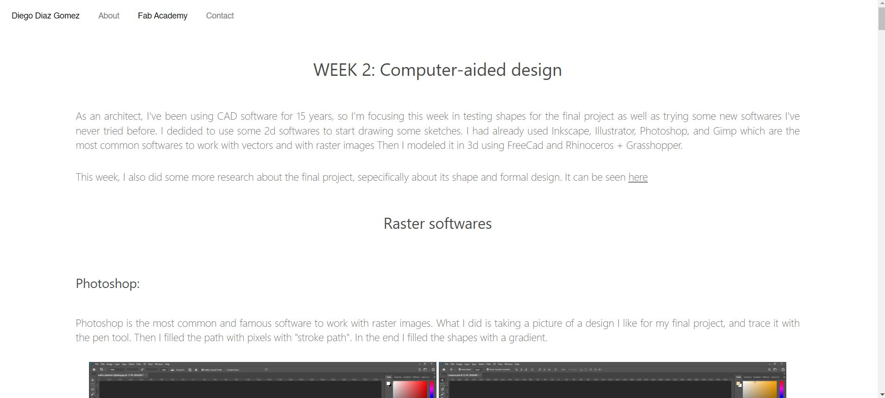
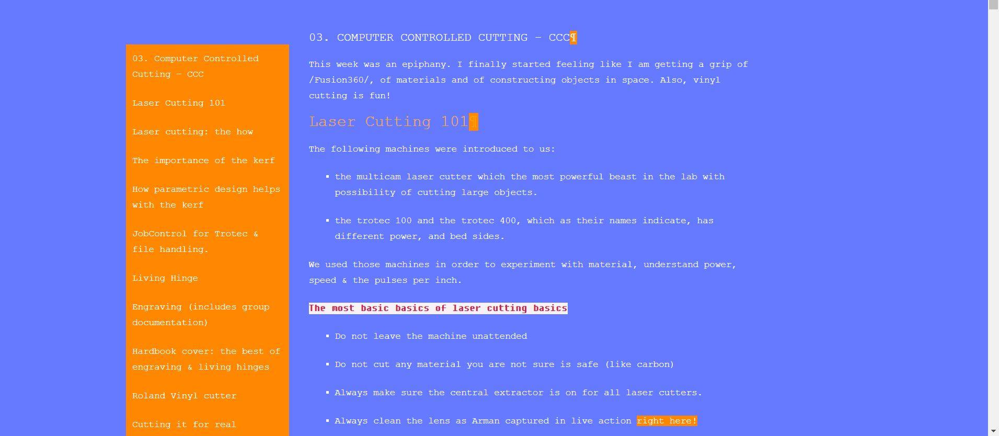
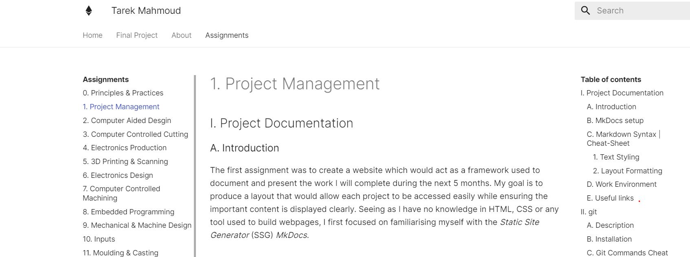

The first week of the Fab academy consisted of us being introduced to the fundamentals of creating websites, git and how past students went about doing their time at fab academy. For the task this week, I went through 3 websites of past students, drawing inspiration, understanding and ideas how I should go around my projects and execution through my Fablab journey.
Diego Diaz Gomez's website link
I Enjoyed the layout and simplicity of Diego’s website. The order and function is what I would like to strive for in my documentation. As he was a former architect and so was I, I enjoy his style of documentation and representation of ideas drawn from his previous practice, including drawings, and inspiration notes

What stood out for me about Lynn’s website was firstly the use of colour and animation. I liked how she highlighted headings, links, important notes in an orange colour different to the background. I also enjoy that she is a female identifying. Her identity and ideas as a female maker reflect in her experimentations -which I hope to do furthering my journey as well.

What I liked about Tarek’s website is that it is easy to navigate. It follows the navigation of the fablab Barcelona website. In this case, it is very easy to navigate each assignment and subheading, yet he managed to keep the site uncluttered, simple and easy to navigate, which I hope to take in account when I make my documentations.
